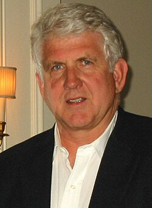

Robert Metcalfe | |
|---|---|
 Metcalfe in 2004 | |
| Born | Robert Melancton Metcalfe April 7, 1946 New York City, U.S. |
| Education | |
| Known for |
|
| Spouse | Robyn |
| Children | 2 |
| Awards |
|
| Scientific career | |
| Fields | |
| Institutions |
|
| Thesis | Packet Communication (1973) |
| Jeffrey P. Buzen | |
Robert "Bob" Melancton Metcalfe (born April 7, 1946)[2][3] is an American engineer and entrepreneur who contributed to the development of the internet in the 1970s. He co-invented Ethernet, co-founded 3Com, and formulated Metcalfe's law, which describes the effect of a telecommunications network. Metcalfe has also made several predictions which failed to come to pass, including forecasting the demise of the internet during the 1990s.
Metcalfe has received various awards, including the IEEE Medal of Honor and National Medal of Technology and Innovation for his work developing Ethernet technology. In 2023, he received the Turing Award, the highest distinction in computer science.[4] From 2011 to 2021, he was professor of innovation and entrepreneurship at the University of Texas at Austin.[5]
Robert Metcalfe was born in 1946 in New York, New York, to Ruth and Robert Metcalfe. He is of English, Irish, and Norwegian descent. His father was a test technician who specialized in gyroscopes. His mother was a homemaker who later became a secretary at Bay Shore High School.[6] Metcalfe graduated from that school in 1964.[7][6]
Metcalfe graduated from the Massachusetts Institute of Technology in 1969, receiving two Bachelor of Science degrees in electrical engineering and industrial management. He then attended Harvard University and received a Master of Science in applied mathematics in 1970 and a Doctor of Philosophy in computer science in 1973.[3][8]
Metcalfe and his wife Robyn have two children.[9]
While pursuing his doctorate in computer science, Metcalfe took a job with MIT's Project MAC after Harvard refused permission for him to connect the university to the then-new ARPAnet. At MAC, Metcalfe was responsible for building some of the hardware that would link MIT's minicomputers with ARPAnet. Metcalfe made ARPAnet the topic of his doctoral thesis, but Harvard initially rejected it.[10] Metcalfe decided how to improve his thesis while working at Xerox PARC, where he read a paper about the ALOHA network at the University of Hawaiʻi. He identified and fixed some of the bugs in the AlohaNet model, then added that work to his revised thesis. It was then accepted by Harvard, which granted his PhD.[11]
Metcalfe was working at PARC in 1973 when he and David Boggs invented Ethernet, initially as a standard for connecting computers over short distances. He later recalled that Ethernet was born on May 22, 1973, the day he circulated a memo titled "Alto Ethernet" which contained a rough schematic of how it would work. "That is the first time Ethernet appears as a word, as does the idea of using coax as ether, where the participating stations, like in AlohaNet or ARPAnet, would inject their packets of data, they'd travel around at megabits per second, there would be collisions, and retransmissions, and back-off," Metcalfe explained. Boggs argued that another date was the birth of Ethernet: November 11, 1973, the first day the system actually functioned.[9]
In 1979, Metcalfe departed PARC and co-founded 3Com,[12] a manufacturer of computer networking equipment, in his Palo Alto apartment.[9] 3Com became a leading provider of networking solutions, and Ethernet became the dominant networking standard for local area networks (LANs).[13] In 1980 he received the ACM Grace Hopper Award for his contributions to the development of local networks, specifically Ethernet. In 1990, the 3Com board of directors appointed Éric Benhamou as CEO instead of Metcalfe, who then left the company.[9] He spent 10 years as a publisher and pundit, writing an internet column for InfoWorld. In 1996, he co-founded Pop!Tech, an executive technology conference.[14] He became a venture capitalist in 2001 and subsequently a general partner at Polaris Venture Partners.[3]
From 2011 to 2021, he was a professor at The University of Texas at Austin's Cockrell School of Engineering, specializing in innovation initiatives.[15] Metcalfe was a keynote speaker at the 2016 Congress of Future Science and Technology Leaders and, in 2019, he presented the Bernard Price Memorial Lecture in South Africa.[16] In June 2022, Metcalfe returned to MIT by joining the Computer Science and Artificial Intelligence Laboratory as a research affiliate and computational engineer, working with the MIT Julia Lab.[17]
In 1996, Metcalfe was awarded the IEEE Medal of Honor for "exemplary and sustained leadership in the development, standardization, and commercialization of Ethernet."[18] The following year, he was elected as a member into the National Academy of Engineering for the development of Ethernet.[19] He received the National Medal of Technology in 2003 "for leadership in the invention, standardization, and commercialization of Ethernet".[20] In October 2003, he received the Marconi Award for "For inventing the Ethernet and promulgating his Law of network utility based on the square of the nodes".[21]
Metcalfe was inducted into the National Inventors Hall of Fame in 2007, for his work with Ethernet technology.[22] In 2008, he received the Fellow Award from the Computer History Museum "for fundamental contributions to the invention, standardization, and commercialization of Ethernet."[23]
In March 2023, Metcalfe was awarded the 2022 Association for Computing Machinery's Turing Award for his contributions to the invention of Ethernet technology.[24][25]
In 1995, Metcalfe argued that the Internet would suffer a "catastrophic collapse" in the following year; he promised to eat his words if it did not. During his keynote speech at the sixth International World Wide Web Conference in 1997, he took a printed copy of his column that predicted the collapse, put it in a blender with some liquid and then consumed the pulpy mass.[26][27] He had suggested having his words printed on a very large cake, but the audience would not accept this form of "eating his words."[28]
Only one small hitch, which is, when I showed up in June of '72 to defend my PhD thesis at Harvard, it was rejected, and I was thrown out on my ass
.jpg){kind=link}